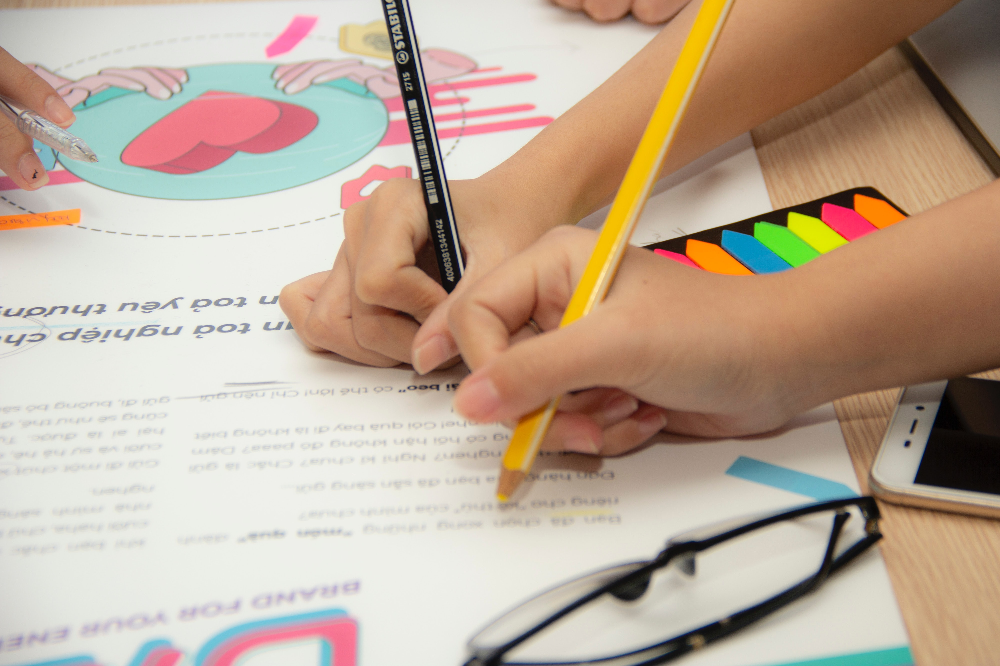

Адресатами программы «Английский язык (уровень Elementary)» являются лица от 20 до 55 лет с базовым уровнем владения языка не ниже уровня Beginner.
Объём программы — 72 часа, в том числе 72 ауд. часа.
Формы обучения и виды занятий
Занятия реализуются в очной форме, посредством проведения групповых видов работы. Порядок организации занятий.
Срок освоения программы — 4 месяца.
Режим занятий — 2 раза в неделю. Длительность занятия — 90 мин.
Адресат программы: широкий круг лиц, желающий изучать английский язык для межличностного и профессионального общения, ранее изучавших английский язык уровень Pre-Intermediate.
Объём программы: 72 часа.
Формы обучения и виды занятий: практические занятия.
Срок освоения программы: 4 месяца (сентябрь-январь / февраль-март)
Режим занятий: 2 раза в неделю по 90 минут (9 занятий в месяц. Дни и время — по договоренности с группой).


Адресатами программы «Английский язык для общения (интенсивный курс)» являются слушатели 18-55 лет, владеющие языком на уровне А2.Объём программы — 72 часа.
Формы обучения и виды занятий:
Коллективно-групповые занятия: практические занятия, занятия-соревнования, ролевые игры, деловые игры;
Индивидуально-коллективные системы занятий: погружения, творческие недели, проекты, презентации.
Срок освоения программы — 4 месяца.
Режим занятий — 2 занятия в неделю по 2 аудиторных часа (1,5 астрономически часа).

Адресатами программы являются учащиеся 8-10 классов. В группы принимаются все желающие обучаться по данной программе.
Объём программы — 192 часа: 8 класс — 64 часа, 9 класс — 64 часа, 10 класс — 64 часа.
Формы обучения и виды занятий:
коллективно-групповые занятия: практические занятия, занятия — соревнования, ролевые игры, деловые игры;
индивидуально-коллективные системы занятий: погружения, творческие недели, проекты, презентации.
Срок освоения программы — 3 года.
Режим занятий — 2 раза в неделю в течение восьми месяцев, после четырёхмесячного перерыва занятия возобновляются. Длительность занятия — 45 минут.